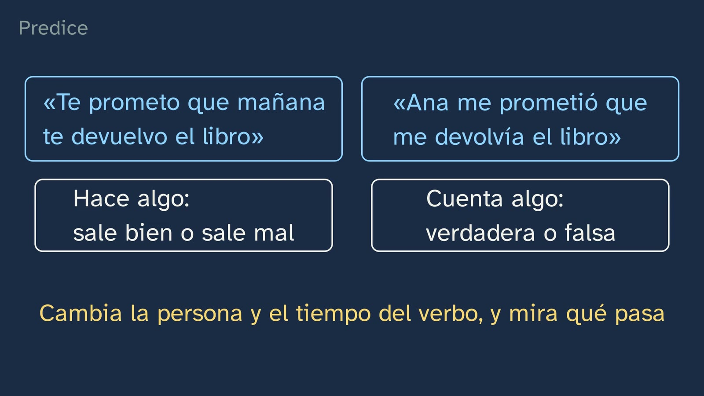
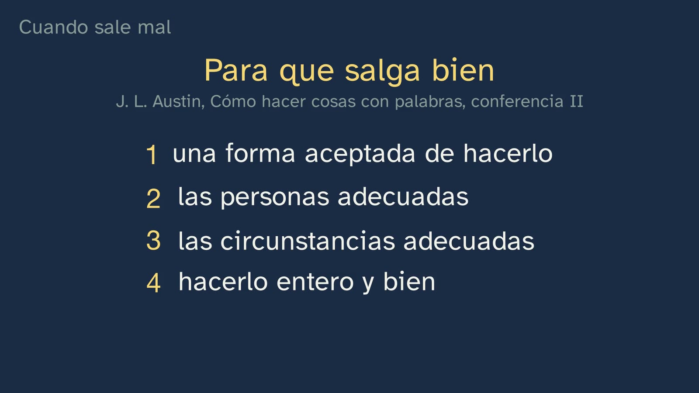
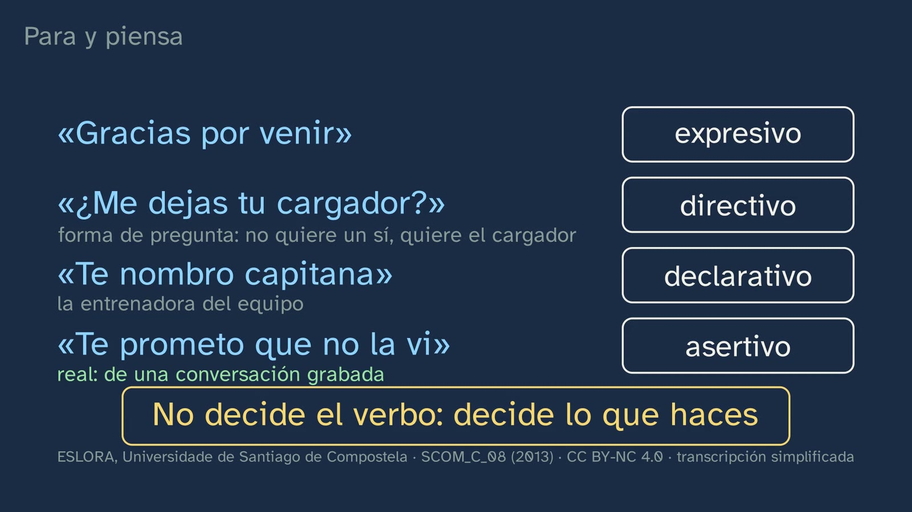
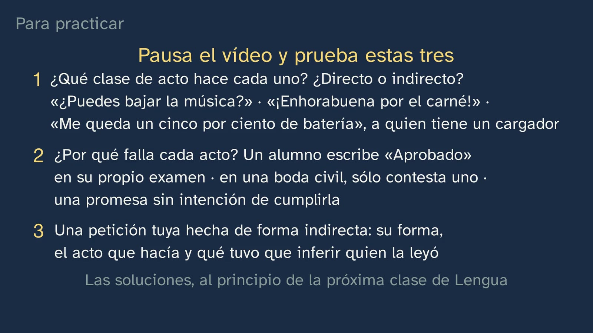

Doing things with words
In a nutshell
After retrieving class 1 and giving its solutions, the class starts with a word from Spain's Official State Gazette (BOE): «DISPONGO» ("I decree"). It is the word that closes the preamble of Royal Decree 243/2022 (BOE no. 82, 6 April 2022, p. 46049), the decree that sets the basis of what is studied in the Bachillerato throughout Spain. Everything before it explains; that word, by contrast, does something: it does not tell what is established, it establishes it. Vera soon comes down from the BOE to everyday life («Te lo prometo», «Te pido perdón», «Te doy las gracias»: "I promise", "I apologise", "Thank you") and asks for a prediction: of «Te prometo que mañana te devuelvo el libro» ("I promise I'll give you the book back tomorrow") and «Ana me prometió que me devolvía el libro» ("Ana promised me she'd give me the book back"), can both be false? The answer comes from a linguist's test, changing the person and tense of the verb and seeing what happens: one sentence tells something and can be false; the other does not tell of a promise, it makes it, and it goes right or goes wrong. These are John L. Austin's performative utterances (his Harvard lectures of 1955, published in 1962 as How to Do Things with Words; the class's title is a tribute to its Spanish translation, Cómo hacer cosas con palabras). Next, why an act can fail: «Dispongo» written in a notebook changes no curriculum, and the decree's own preamble lists who has to take part. These are Austin's conditions, and the proof that they are not a philosopher's whim is in the Civil Code (arts. 58, 46 and 73): at a wedding both have to answer, someone who is already married cannot marry, and a wedding without the person who must officiate is void. Austin separated two failures: the act that never gets done, and the act that is done, but badly, which he called an "abuse", in the sense of misuse. With Austin's further twist, stating is also doing, and every utterance has three acts: the locutionary, the illocutionary and the perlocutionary. The typical mistake, "speaking is describing", falls, with its consequence for living together: whoever speaks answers for what they do with their words, and whoever has authority does more with them. The second half orders what we do into John Searle's five classes (1975) and puts them to the test with a real sentence from the ESLORA corpus, «Te prometo que no la vi» ("I promise I didn't see it"), which promises nothing: it is not the verb that decides; what you do decides. At the end comes class 1's promise: «¿tienes hora?» ("Got the time?") is an indirect act, a question that asks for something, and it works as a request because it asks precisely about what is needed to give it to you. Two real conversations prove it: the ESLORA researchers annotated a «¿tienes hora?» as a directive act, and in a kitchen three questions with the form of a question get three different answers, depending on the act the other person has understood.
Objective. By the end, students will be able to recognise what an utterance does besides saying something (promising, asking, apologising, marrying…), tell direct speech acts from indirect ones and explain why an act can fail.
For readers outside Spain: the Bachillerato is the last two years of secondary school (ages 16–18). Spanish Language and Literature I is a core subject, taken by every student in the first year. The video is in Spanish, with English subtitles; the images on this sheet come from the video and keep their Spanish text. The class is about Spanish, so the examples stay in Spanish here, with an English gloss. Austin and Searle are quoted in their original English; in the video they appear in our Spanish translation. Spanish legal texts (the BOE, the decree, the Civil Code, the Constitution) and the other Spanish sources are quoted in our translation. The BOE is Spain's Official State Gazette, where every law and decree is published; the PAU is the university entrance exam; Spain is divided into seventeen autonomous communities (regions), each of which completes the national curriculum with its own.
Curriculum
Spain's Royal Decree 243/2022, Spanish Language and Literature I, a core subject in the first year of Bachillerato (consolidated text in the BOE, checked on 05/10/2026: its latest update, of 02/07/2026, only touches article 23.4; the Language annex has not changed since 2022). Our translation of the official Spanish text.
| Element | What the decree says | Where the class works on it |
|---|---|---|
| Core knowledge (block B, "Communication", 1. Context) | "Components of the communicative event: degree of formality of the situation and its public or private nature; social distance between the interlocutors; communicative purposes and interpretation of intentions; channel of communication and non-verbal elements of communication." | Its centre: "communicative purposes and interpretation of intentions". What the speaker does (promising, asking, appointing, decreeing) and how the listener interprets it: the inference behind the indirect act (12:05) and the answer that gives it away (13:43). Formality and distance come in classes 3 to 5 |
| Core knowledge (block B, 3. Processes) | "Oral comprehension: overall sense of the text and the relationship between its parts, selection and retention of the relevant information. The intention of the sender. Detection of discriminatory uses of verbal and non-verbal language. Assessment of the form and content of the text." | "The intention of the sender", in three real spoken exchanges from the ESLORA corpus (11:06, 12:27 and 13:06). The rest of this item, in other classes |
| Core knowledge (block D, "Reflection on language") | "Drawing one's own conclusions about how the linguistic system works, with a specific metalanguage, from the observation, comparison and classification of communicative units and from the contrast between languages […]" | The method of the class. Observing (the BOE, the Civil Code, the corpus), comparing («te prometo» versus «me prometió», "I promise" versus "she promised", 3:20; «¿tienes mantequilla?» versus «¿tienes hora?», "got any butter?" versus "got the time?", 14:10), classifying (the five classes, 9:06; direct and indirect, 11:34) and naming it with its metalanguage: performative, locutionary, illocutionary, perlocutionary, assertive, directive, commissive, expressive, declaration, direct, indirect. The contrast between languages, in this sheet: Austin's "I do" and the «Sí, juro» ("Yes, I swear") of his Spanish translation (see "Notes for teachers") |
| Specific competence 2 | "To understand and interpret oral and multimodal texts, with special attention to academic texts and those of the media, grasping the general sense and the most relevant information, identifying the point of view and the intention of the sender and assessing their reliability, form and content, in order to build knowledge, to form an opinion and to widen the possibilities of enjoyment and leisure." | Identifying the sender's intention in real conversations. Its description says what understanding is: "a constant process of interpreting intentions in which the knowledge shared by the interlocutors comes into play, together with all those contextual and co-textual elements that make it possible to go beyond the meaning of the text and interpret its sense". That is what someone does who hears «¿tienes hora?» and answers with the time |
| Specific competence 9 | "To consolidate and deepen explicit and systematic knowledge of the structure of the language and its uses, and to reflect autonomously on linguistic and discursive choices, with the appropriate terminology, in order to develop linguistic awareness, to increase the communicative repertoire and to improve skills both in oral and written production and in comprehension and critical interpretation." | Explicit knowledge of language use, with its terminology. Its description asks for "the morphosyntactic, semantic and pragmatic levels" to be integrated, and for a method: "the manipulation of utterances, the contrast between sentences, the formulation of hypotheses and rules, the use of counterexamples". The class manipulates («te prometo» → «me prometió», 3:20; «te aviso» versus «te convenzo», "I warn you" versus "I convince you", 7:59) and uses a real counterexample («Te prometo que no la vi», 11:06) |
| Specific competence 10 | "To put communicative practices at the service of democratic coexistence, the resolution of conflicts through dialogue and the equal rights of all people, using non-discriminatory language and banishing abuses of power through words, in order to foster a use of language that is not only effective but also ethical and democratic." | "Abuses of power through words", with the class's tool: if speaking is doing, whoever speaks answers for what they do, and whoever has authority does more with their words («quedas despedido», «estás expulsado»: "you're fired", "you're expelled", 8:41). That is why it matters who can say them (4:23). Its description: "Eradicating discriminatory and manipulative uses of language, as well as abuses of power through words, is an ethical imperative" |
| Criterion 2.1 | "To identify the overall sense, the structure, the relevant information according to communicative needs and the intention of the sender in complex oral and multimodal texts from different spheres, analysing the interaction between the different codes." | Only part of it: the sender's intention, in short, real spoken exchanges. Complex texts come later |
| Criterion 9.2 | "To explain and argue the interrelation between the communicative purpose and the linguistic choices of the sender, as well as their effects on the receiver, using explicit knowledge of the language and a specific metalanguage." | Why someone chooses to ask with a question or a hint rather than an order (11:34), and its "effects on the receiver", which are the perlocutionary act (7:50) and the answer (13:43). Exercises 1 and 3 ask for it in writing |
| Criterion 10.1 | "To identify and banish discriminatory uses of language, abuses of power through words and manipulative uses of language, on the basis of reflection on and analysis of the linguistic, textual and discursive elements used, as well as of the non-verbal elements that govern communication between people." | "Abuses of power through words": the section at 8:20, the BOE activity (who can say what, and who answers for it) and the open question |
"Speech act" is not in the Bachillerato decree, nor is "performative" (realizativo), nor "illocutionary": we searched the whole annex. The literal basis is "interpretation of intentions", "the intention of the sender", the communicative purpose and its "effects on the receiver" (9.2), the "pragmatic" level (description of competence 9) and "abuses of power through words" (competence 10). What the class adds are the "instruments of analysis" the introduction to the subject asks for: "Going deeper than in the previous stage lies in a greater theoretical and methodological awareness for analysing reality, and in mobilising a larger body of knowledge, articulated through instruments of analysis that help to build and structure explicit knowledge of the linguistic and literary phenomena dealt with." None of the eight regions reviewed (Andalusia, Catalonia, Madrid, the Valencian Community, Galicia, Castile and León, the Basque Country and Aragon) names speech acts in Language I, and all of them ask for the intention of the sender. Madrid adds an item the class covers fully, «La modalidad. Formas lingüísticas para la expresión de la subjetividad y de la objetividad.» ("Modality. Linguistic forms for expressing subjectivity and objectivity."; Decree 64/2022, year-1 core knowledge, B.4, BOCM no. 176, p. 269): the "form" the class speaks of at 11:34 is sentence modality (in Spanish school grammar, modalidad oracional: declarative, interrogative, exclamative, imperative…).
What students bring. From class 1, meaning and sense, inference and the cooperative principle: the class retrieves them at 0:17 and uses them to explain the indirect act (12:05). From lower secondary (ESO, ages 12–16), the name: Royal Decree 217/2022 asks in years 3 and 4 for "conversation, with special attention to speech acts that threaten the interlocutor's face (disagreement, complaint, order, reproof)" (BOE no. 76, 30/03/2022, p. 41711), and six of the eight regions reviewed include it in their lower-secondary curricula; Madrid, as early as years 1 and 2 ("practising speech acts: narrating, giving opinions, holding dialogues, describing"). Many students will arrive with the package that lower-secondary textbooks and open resources give: three "dimensions" of the act and five classes, almost always without an author. What is new here is the authors, with their work and their page; why an act fails; and why an indirect act works. None of the first-year Bachillerato textbooks we have been able to read (Vicens Vives, Tabarca, McGraw-Hill, SM, Editex, Algaida, Casals, Teide and Micomicona; review of 05/10/2026) cites Austin or Searle with their work and date, explains Austin's failures or says why a question can be used to ask for something. The term «acto de habla» ("speech act"), which is the textbooks' term and lower secondary's, is given by the class at the end of the chapter "Speaking is always doing"; it is worth telling its history too (mistake 6).
How the class is built
Video chapters
Seventeen minutes, in thirteen chapters. It is a theory class: Vera, at her desk, and the board. It follows the channel's learning principles (in Spanish) and what the decree asks of this subject in the Bachillerato: instruments of analysis, with their authors, and reflection on language through inquiry (competence 9). That is why it does not give a list of definitions: it starts from a real text that does something, manipulates it, shows how it fails and checks it against the law and against corpus data. It is the second of the topic's seven classes; the next is the first language lab, "How do we ask for things?", and this one leaves its hypothesis set up.
| Chapter | What happens | Why this way |
|---|---|---|
| What we'll see | Vera says hello and goes back to the map of the topic, with its seven numbered classes and the second highlighted. Today, one step further: when we speak, besides saying things, we do them. | Knowing where you are. Topic 1 keeps the numbered map its first class showed. |
| What you already know | What is the difference between the meaning of a sentence and its sense? Pause. What the words say, what they communicate in their situation, and the leap between the two: inference. | Retrieving what this class needs: without inference the indirect act cannot be understood. |
| Solutions | Class 1's three exercises, in a little over a minute. Then the hook, to camera: "There are words that don't tell what happens: they make it happen. And one of them rules over what you study this year." | Spaced practice. The hook promises something that touches the student: their own syllabus. |
| The word that does | The BOE of 6 April 2022, with the «DISPONGO» ("I decree") of Royal Decree 243/2022 (p. 46049), its gloss («establezco», "I establish") and who speaks in it (the King, who signs with the Minister). The word does something: it does not tell what is established, it establishes it. Then the same in everyday life: «Te lo prometo», «Te pido perdón», «Te doy las gracias» ("I promise", "I apologise", "Thank you"). Prediction: can «Te prometo que mañana te devuelvo el libro» and «Ana me prometió que me devolvía el libro» both be false? Pause. Only the second, and we know by changing the person and tense of the verb. | A real text nobody expected in a Language class, and then the intuition, with everyday examples. The prediction comes before the rule, and the rule comes from a manipulation, the method of competence 9. |
| Austin: saying is doing | J. L. Austin, his Harvard lectures of 1955 and the name: performative utterance (in Spanish, enunciado realizativo), which does not describe an action, it performs it, and is neither true nor false but goes right or goes wrong. The class's title, a tribute to his book. | The exact idea, with its author and his work, after students have seen it working. |
| When it goes wrong | «Dispongo» in a notebook: the same words, and nothing happens. The decree's preamble, just before, lists who has to take part: the Minister proposes it, the Council of State agrees and the Council of Ministers deliberates on it. Austin's conditions: an accepted procedure, the appropriate persons, the appropriate circumstances, and carrying it out completely and correctly. | The proof comes from the same text as the hook. The preamble "recites" the conditions and «DISPONGO» operates, which is exactly Austin's comparison with the language of lawyers (1962, p. 7). |
| How do we know? | The Civil Code, art. 58: whoever officiates asks each of the parties whether they consent and, if both answer yes, declares them united in marriage. Two acts done with words. If only one answers, there is no wedding. Someone who is already married cannot marry (art. 46), and a wedding without the person who must officiate is void (art. 73). Austin's examples of failure were almost the same, and on a stage these sentences are hollow. The two failures: the act that never gets done and the act that is done, but badly ("abuse"). | The channel's question: this is not armchair theory; the law applies it. None of the textbooks reviewed uses a real legal text for speech acts: their weddings and trials are invented. |
| Speaking is always doing | It seemed there were sentences that describe and sentences that do. Austin kept pulling the thread: stating is also doing, and whoever states commits themselves. The three acts of «Mañana hay examen» ("There's an exam tomorrow"), said by your teacher: what she says (locutionary), what she does in saying it, warning (illocutionary), and what she achieves, that you study, or that you get stressed (perlocutionary). And a test to tell the last two apart: you can say «Te aviso» ("I warn you"); saying «te convenzo» ("I convince you") is not enough to convince anyone. | A fully worked example, from a situation students know. The test is Austin's own. |
| The typical mistake | "Speaking is describing", crossed out. Speaking is acting, and that is why whoever speaks answers for what they do with their words. An insult or a threat are acts; a «quedas despedido» or an «estás expulsado» ("you're fired", "you're expelled"), said with authority, change someone else's life. Using them to humiliate or threaten is abusing the power of words. Vera, to camera: the key point so far. | The mistake, stated and taken apart with everything seen so far. Competence 10 is worked on with the class's tool, not added at the end as a moral. |
| Five things we do when we speak | Searle (1975) orders acts into five classes according to what you are trying to do: assertives, directives (asking questions too), commissives, expressives and declarations, in two blocks and with one example each. "Stop and think": «Gracias por venir» ("Thanks for coming"), «¿Me dejas tu cargador?» ("Will you lend me your charger?"), «Te nombro capitana» ("I appoint you captain") and a real sentence, «Te prometo que no la vi» ("I promise I didn't see it"). Pause. The last one promises nothing: it assures something that has already happened. It is an assertive. "It is not the verb that decides: what you do decides." | The classification, split so that it can be followed aloud, and put to the test at once. The real counterexample takes apart the idea that the verb decides the act. |
| Direct and indirect | «¿Tienes hora?» ("Got the time?"), class 1's promise. By its form, a question; by its act, a request. «Dime qué hora es, por favor» ("Tell me what time it is, please") is direct; «¿Tienes hora?», indirect. Why does a question work for asking? Because it asks precisely about what is needed to give it to you: if you have it and you are cooperating, you don't stop at "yes". Searle: the indirect act is performed by way of another, and the listener infers it. | Class 1's promise is kept, and with the explanation, not just the name: none of the textbooks reviewed says why an indirect act works. On screen, next to «Forma» ("Form"), «(modalidad)» ("modality"): the bridge to what teachers already teach. |
| In real life | In the interviews of the ESLORA corpus, the researchers annotate some of the things sentences do, and they annotated a real «¿tienes hora?» as a directive act. Then a conversation between two university students making béchamel sauce: «¿Tú tienes mantequilla?» — «A ver… Sí» ("Have you got any butter?" — "Let's see… Yes"); «¿Me das la mantequilla?» — «¡Toma! ¡Claro, mujer!» ("Will you give me the butter?" — "Here! Of course!"); «Pero ¿tienes suficiente?» — «Sí, sí» ("But have you got enough?" — "Yes, yes"). Each question gets the answer to the act the other has understood. And why does "yes" work for the butter and not for the time? | Real data with their reference and their licence on screen, as in the language labs. The channel's question, "how do we know?", once more: what act the listener has understood is seen from what they answer. |
| Practice and keep thinking | The recap, with a warning that it is a repetition, and the return to «Dispongo»: "it doesn't tell, it decrees". Three exercises, the open question (a "like", what act does it perform? can it go wrong?) and the hypothesis of the next lab: "the more you ask for, and the less familiar you are with the person, the more roundabout you are". Vera says goodbye: for what you do with your words, you are the one responsible. | Spaced practice: the solutions open class 3. The hook comes back at the end and closes the circle. |
Bridges to other subjects. Philosophy: Austin and Searle are philosophers of language, and Austin's passage on the actor (1962, p. 22) is at the centre of Jacques Derrida's dispute with Searle ("Signature Event Context", in Limited Inc, 1988); before them, Thomas Reid (1788) and Adolf Reinach (1913) had thought of promising, asking or forgiving as "social acts" (B. Smith, 1990; Stanford Encyclopedia of Philosophy, "Speech Acts", note 1). Economics and Law: many things that move money or rights are done with words. Three of Austin's first four examples come from that world: a wedding, a will ("I give and bequeath my watch to my brother") and a bet (1962, p. 5); "contract" is in his list of verbs of commitment (Searle copies it, 1975, p. 351), and in law it has been studied which legal norms are performative, norms that "are neither true nor false […]; they can only be felicitous or infelicitous" (López Hernández, 2005, p. 500). Language, in its own syllabus: the class's "form" is sentence modality, and the class gives the theory of the "communicative intention" the PAU asks for (see mistake 5 and "Notes for teachers"). Contemporary World History: the formula with which the King gives assent to laws («Yo vengo en sancionar…», "I hereby sanction…"; «Mando a todos los españoles…», "I command all Spaniards…") "does not differ greatly from the one laid down by the Constitution of Cádiz" (1812), says the Spanish Parliament's official commentary on article 91 of the Constitution. Performing Arts II: the same decree lists among its core knowledge "Performative acts: generating reality." (RD 243/2022, p. 46087). It is Austin's word, performative, and Austin says that on a stage these sentences are hollow: a good question to put to that other subject.

A plan for a 50-minute lesson
| Minutes | What to do |
|---|---|
| 0–4 | No video. "Before you start", on the worksheet: everyone writes three things they have done today with words alone, spoken or written. "Talking" doesn't count: what did they do by talking? They keep them for the end. |
| 4–10 | Video from 0:00 to 3:55. Pause at 0:26 (meaning and sense: half a minute in writing) and at 3:15 (can both be false?: a show of hands, and one more question, which is the good one: "what would have to happen for the first one to be false?"). |
| 10–17 | Video from 3:55 to 6:52: Austin, «Dispongo» in the notebook, the conditions, the Civil Code and the two failures. On pausing, in pairs, the worksheet table "Does it go right or wrong?" (3 minutes). |
| 17–24 | Video from 6:52 to 10:46: speaking is always doing, the three acts, the typical mistake, Vera at the midpoint and Searle's five classes. Pause at 10:41 (the "stop and think"): everyone classifies the four sentences in writing before hearing the answers. |
| 24–36 | The activity: act hunters in the BOE. |
| 36–44 | Video from 10:46 to 14:50: the answers («Te prometo que no la vi»), direct and indirect, and the real conversations. Pause at 13:43, before Vera compares the answers: "what act has the other person understood in each question? What are you basing that on?". |
| 44–50 | Video from 14:50 to the end (17:04). Go back to the list from the start: what class of act was each thing? Was any of them indirect? The exercises, for homework with the worksheet. |
Typical mistakes and how they are handled
With an honest warning: none of them has been measured with Spanish Bachillerato students. The first is the one the topic sheet anticipates for this class, and nobody, as far as we know, has measured it; we found the others written in textbooks, open resources and reference works (review of 05/10/2026), so it is reasonable to expect them in the classroom.
- "Speaking is describing". This is the mistake the class takes apart head-on (8:20), and the one Austin wanted to take apart: "It was for too long the assumption of philosophers that the business of a 'statement' can only be to 'describe' some state of affairs, or to 'state some fact', which it must do either truly or falsely" (1962, p. 1). That mistake is called the "descriptive" fallacy (p. 3); Austin does not coin the name there, he says it "is called" that, and he had already used it in 1946. In textbooks it appears more discreetly: the declarative sentence as «información neutra» ("neutral information": «Hoy es lunes», "Today is Monday", Editex) or as «información real» ("real information", Teide). The class deals with it in two stages: first it separates what describes from what does (3:20), and then, with Austin, it merges them: "Surely to state is every bit as much to perform an illocutionary act as, say, to warn or to pronounce" (1962, p. 133; 1975, p. 134). One point of care, so as not to go too far the other way: that every utterance does something does not mean describing does not exist. Describing is one of the acts (the assertives), and Austin does not throw the distinction away: he keeps it as a special case of his general theory (1962, p. 147; 1975, p. 148).
- Requiring performatives to be in the first person and the present tense. McGraw-Hill NOVA (2026) says so: performatives «deben usarse en tiempo presente y en primera persona» ("must be used in the present tense and in the first person"). Austin says the opposite: "person and voice anyway are not essential" (1962, p. 57), with examples like "You are hereby authorized to pay…" and "Notice is hereby given that trespassers will be prosecuted" (p. 57); and, on the next page, that mood and tense do not work as an absolute criterion either: instead of "I give you off-side" it is enough to say "You were off-side", and instead of "I find you guilty", "You did it" (p. 58). The same textbook contradicts itself in its activity 11d: «Queda inaugurada esta exposición» ("This exhibition is hereby declared open") is a textbook performative, and it is in the third person. The Spanish Royal Academy's Nueva gramática (New Grammar of the Spanish Language) gives others: «Se levanta la sesión» ("The session is adjourned"), «Queda usted despedido» ("You are dismissed") (§ 42.2). And so does the class itself: «Perdona» ("Sorry") and «Mañana te lo devuelvo» ("I'll give it back tomorrow") (9:53–10:05) do what they do without «te pido perdón» ("I apologise") or «te prometo» ("I promise"). A warning about the video: the test at 3:39 ("change the person and tense of the verb, and see what happens") is a test, which works very well with «te prometo», not a rule for what a performative is. The other way round does not work either: the first person present is not enough. «Te estoy pidiendo perdón» ("I am apologising to you", with the progressive) only describes what you are doing; «No te prometo llevarte al cine» ("I don't promise to take you to the cinema") does not promise (Nueva gramática, § 42.2); «Te insulto» ("I insult you") does not insult (Glosario de términos gramaticales, "verbo realizativo"). Nor is the formula «por la presente» (Austin's hereby) infallible: Austin proposes it as "a useful criterion" (p. 57) and soon warns that it is too formal and that it also works with "I hereby state…", which is a statement (p. 61).
- "The form, or the verb, decides the act". This is the mistake textbooks repeat most: treating the modality of the sentence as if it were the act («Orden = verbo en imperativo», "Order = verb in the imperative", in Teide; «Di dónde vives», "Say where you live", as an interrogative, in Casals RADIX). The class takes it apart in three steps without naming it: «Te prometo que no la vi» contains «prometo» and is an assertive (11:28: "It is not the verb that decides: what you do decides"); «¿Tienes hora?» has the form of a question and makes a request (11:34); and the same form, «¿tienes…?» ("have you got…?"), performs different acts depending on the situation (14:10). Searle warns of it in his own way: verbs are one thing and acts another (1975, p. 368). For anyone who wants to think further, the class itself has a case: «Perdona» (10:05) has the imperative form, and it is an expressive. A reasonable answer: in fixed formulas, like «perdona» or «¿me das…?» ("will you give me…?"), hardly anyone hears the form any more.
- Confusing the perlocutionary act with what the listener does. Several open resources do it: in «Tengo frío» ("I'm cold"), calling it perlocutionary that the teacher closes the window (INTEF, «La modalidad oracional y los actos de habla», "Sentence modality and speech acts"); or saying that the perlocutionary act of «Préstame tu lápiz» ("Lend me your pencil") is "lending the pencil" and that, if it isn't lent, «la comunicación se frustrará» ("communication will be frustrated") (the blog «No te muerdas la lengua»). The perlocutionary act is an act of the speaker: what they achieve by saying something, "such as convincing, persuading, deterring, and even, say, surprising or misleading" (Austin, 1962, p. 108; 1975, p. 109). That the listener studies is the consequence; getting them to study is the perlocutionary act. That is why the class puts it like this: "what it achieves in the listener" (7:50). And the request is not frustrated because the other says no: the illocutionary act has been performed if it has been understood. There is a real example to see it, in "What the class leaves out". Two nuances the class lets show: the effect may not be intended ("or that you get stressed", 7:50), and the perlocutionary effect may also reach the speaker or other people (p. 101); the video, for simplicity, only speaks of the listener.
- Calling the illocutionary act "intention" without qualification. The Academy's dictionary defines ilocutivo by «la intención del hablante al emitirlo» ("the speaker's intention in uttering it"), the Instituto Cervantes' online dictionary (CVC) speaks of «un acto ilocutivo o intención» ("an illocutionary act or intention"), and McGraw-Hill NOVA, of «la intención o la función comunicativa» ("the intention or communicative function"). It is not absurd, because the decree itself and the PAU speak of "the intention of the sender" and of "the author's communicative intention". But Austin defines the illocutionary act by its conventional force, "utterances which have a certain (conventional) force" (1962, p. 108; 1975, p. 109), and adds: "Illocutionary acts are conventional acts" (p. 119). The difference shows in two cases from the class. A promise with no intention of keeping it is still a promise (6:20): if the illocutionary act were the intention, it would not be. And the intention of producing an effect is what defines the perlocutionary act (p. 101): hence the mistake of giving "persuading" as an illocutionary intention (in Tabarca, «Directivos… El emisor trata de persuadir», "Directives… The sender tries to persuade"; and in INTEF), when persuading is Austin's example of a perlocution. The class avoids the word: the illocutionary act is "what it does in saying it" (7:39). In class it can be put like this: the sender's intention is what the listener infers; the illocutionary act is what counts as done.
- "The term 'speech act' was coined by Searle". It is false, even though the CVC's Diccionario de términos clave de ELE says so, «El término fue acuñado posteriormente por un discípulo suyo, el filósofo J. Searle, quien perfeccionó y consolidó dicha teoría» ("The term was later coined by a disciple of his, the philosopher J. Searle, who perfected and consolidated the theory"), and Tabarca copies it almost word for word (2022, p. 40). Austin already writes "speech-act" (1962, p. 40) and "The total speech act in the total speech situation" (p. 147; p. 148 in the 2nd edition). Before him, Karl Bühler used Sprechakt and spoke of a "theory of speech acts" (1934), and Adolf Reinach theorised "social acts" (1913) (B. Smith, 1990). Searle made it the title of his 1969 book and systematised it. That he was Austin's "disciple" we have not checked: better not to say it. The same CVC entry says Austin set out his ideas «en la década de los 40» ("in the 1940s"); according to his editor's preface, the ideas were formed in 1939, his Oxford classes on the subject ("Words and Deeds") ran from 1952 to 1954 and the Harvard lectures were in 1955. The Spanish translation, incidentally, renders speech act as «acto lingüístico» ("linguistic act").
- And a warning, which is not a mistake: «¿tienes hora?» is the textbook example. The CVC has it, as do Tabarca («¿Me dices la hora?», "Will you tell me the time?"), Vicens Vives («¿Llevas reloj?», "Are you wearing a watch?"), INTEF («¿Me puede decir la hora, por favor?», "Could you tell me the time, please?") and others. The class takes it up because class 1 promised to explain it, and presents it as what it is; what is new is what comes with it: why it works (12:05) and a real «¿tienes hora?», annotated as a request by the researchers of a corpus (12:27). The same goes for Searle's example, "Can you reach the salt?": it is his and is attributed to him; its Spanish versions («¿Puedes pasarme la sal?», "Can you pass me the salt?") circulate in many resources.

Questions and solutions
Stop and think (in the video)
- What is the difference between the meaning of a sentence and its sense? (0:17; the pause, at 0:26) The video answers at 0:30: the meaning is what the words say; the sense, what they communicate in their situation; and the leap between the two, made by reasoning, is inference. The best answers bring class 1's example: «Tengo examen el lunes» ("I've got an exam on Monday") says they have an exam and communicates that they are not going to the party. It is worth keeping it fresh: at the end, the indirect act is explained with that same inference.
- Class 1's solutions (0:41) are those of its sheet, shortened. In exercise 2, the answer for "all" is the expected one ("none are left", and it cannot be cancelled).
- «Te prometo que mañana te devuelvo el libro» ("I promise I'll give you the book back tomorrow") and «Ana me prometió que me devolvía el libro» ("Ana promised me she'd give me the book back"). Can both be false? (3:01; the pause, at 3:15) No: only the second. It tells of something that happened, and if Ana did not promise it, it is false. The first does not tell of a promise: it makes it, and the promise exists from the moment it is said. If you don't give the book back tomorrow, you break it, but you will not have said anything false (3:20). The board sums it up: «Cuenta algo: verdadera o falsa» ("Tells something: true or false") and «Hace algo: sale bien o sale mal» ("Does something: goes right or goes wrong"). The best answers say how they know, which is what the class wants to teach: you change the person and tense of the verb, from «te prometo» ("I promise you") to «me prometió» ("she promised me"), and see what happens. Two objections may come up, and they are good ones. The first: "if you don't intend to give it back, it's a false promise". Austin takes it up, "we do speak of a false promise", and answers that the promise has been made all the same: "the promise here is not even void, though it is given in bad faith" (1962, p. 11). This is the "abuse" that arrives at 6:20. The second: "so can a performative never be false?". Austin does not go that far: of an unfounded warning he says we would be inclined to call it "false or (better) mistaken" (p. 55). What is judged in a performative is, above all, whether it goes right or wrong.

- And how can it go wrong? (4:23) With «Dispongo» written in a notebook, the words are the same; everything else fails: whoever says it is not the one who can say it, nor is it the place. The decree's preamble, just before the word, says who has to take part: «En su virtud, a propuesta de la Ministra de Educación y Formación Profesional, de acuerdo con el Consejo de Estado, y previa deliberación del Consejo de Ministros en su reunión del día 5 de abril de 2022, DISPONGO:» ("By virtue thereof, on the proposal of the Minister for Education and Vocational Training, in agreement with the Council of State, and after deliberation by the Council of Ministers at its meeting of 5 April 2022, I DECREE:"). Austin's conditions, which the class sums up in four (4:53), are these in his text: "(A. 1) There must exist an accepted conventional procedure having a certain conventional effect, that procedure to include the uttering of certain words by certain persons in certain circumstances", "(A. 2) the particular persons and circumstances in a given case must be appropriate for the invocation of the particular procedure invoked", "(B. 1) The procedure must be executed by all participants both correctly and (B. 2) completely" (1962, pp. 14–15). The accepted procedure is A.1; the persons and the circumstances, A.2; "completely and correctly", B.1 and B.2. The last two, which require sincere thoughts, feelings and intentions and the corresponding conduct afterwards, arrive at 6:20. Two details that are useful in class. The form of «DISPONGO» is regulated: the Directrices de técnica normativa (Guidelines on legislative drafting, 2005, guideline 16) call it the «fórmula promulgatoria» ("promulgation formula") and give its model, which includes the list of who takes part. And Austin compared his idea with the language of lawyers: the closest thing to "performative" would be "operative", the part of a document that carries out the transaction, as opposed to the rest, which "merely 'recites' the circumstances" (1962, p. 7). That is the structure of a royal decree: the preamble recites and «DISPONGO» operates.

- How do we know this is not a philosopher's whim? (5:09) Because the law says the same. The Civil Code, art. 58: whoever officiates at the wedding «preguntará a cada uno de los contrayentes si consiente en contraer matrimonio con el otro y si efectivamente lo contrae en dicho acto y, respondiendo ambos afirmativamente, declarará que los mismos quedan unidos en matrimonio» ("shall ask each of the parties whether they consent to marry the other and whether they do in fact marry in that act and, both answering in the affirmative, shall declare them united in marriage"; wording in force since 3 April 2025). Two acts done with words: each party's "yes" and the declaration. If only one answers, there is no wedding: it is doing it completely (B.2), and the law says so in two other ways: "There is no marriage without matrimonial consent" (art. 45), and "A marriage celebrated without matrimonial consent" is void (art. 73.1). Then the persons: "Those who are bound by a marriage tie" cannot marry (art. 46.2), and a marriage is void if it is "contracted without the intervention of the Mayor or Councillor, court clerk (letrado o letrada de la Administración de Justicia), notary, or official before whom it must be celebrated, or without that of the witnesses" (art. 73.3). Austin's two examples of failure (5:54), with their text and page, are in "Notes for teachers". And the actor: a performative is "in a peculiar way hollow or void if said by an actor on the stage" (p. 22). Austin does not condemn the theatre: he says that this "not serious" use is "parasitic" on the normal one and leaves it out of his study.

- What act does each one perform? (10:21; the pause, at 10:41; the answers, at 10:46 and 11:06) «Gracias por venir» ("Thanks for coming"): expressive (thanking; "thank" is the first expressive verb in Searle's list, 1975, p. 356). «¿Me dejas tu cargador?» ("Will you lend me your charger?"): directive, asking. It has the form of a question, but it does not want a "yes": it wants the charger. Those who add that it is indirect are right by the definition that arrives at 11:34 (the form asks a question, the act makes a request), although it is one of those indirect acts so worn that hardly anyone hears it as a question; class 3 will call them "conventional indirect" requests. «Te nombro capitana» ("I appoint you captain"), said by the coach: declaration (appointing; Searle's example is "I appoint you chairman", p. 358). If a teammate said it, nothing would happen: the appropriate person would be missing. «Te prometo que no la vi» ("I promise I didn't see it"): assertive. It promises to do nothing: it assures something that has already happened. It is the second sense of prometer in the Academy's dictionary, «Asegurar la certeza de lo que se dice» ("To assure the certainty of what one says"). Those who answer "commissive" have been carried along by the verb, which is exactly what the class wants to take apart. The third speaker's reply confirms it, and this is an observation of ours that can be taken to the classroom: «Yo te creo» ("I believe you") is what you say in reply to a statement. For fine-tuning: the University of Piura (Castellano Actual) considers «te prometo que es verdad» ("I promise you it's true") a calque of the English I promise you, although the Academy's dictionary includes that sense. And in ESLORA there is no promise about the future with prometer: the corpus's two «te prometo» assure something.
Teachers should know the whole fragment, which the video simplifies and says so on screen. This is the corpus's literal transcription, as its search engine gives it, with its marks in brackets:
| Speaker | Says | In English (our gloss) |
|---|---|---|
| hab1 | yo no la vi (en parte, solapado) | I didn't see it (partly overlapping) |
| hab3 | ¡Jesús! | Jesus! |
| hab2 | ¿cómo no la ibas a ver? | how could you not see it? |
| hab3 | muy bien (pausa) (risa) te fijaste mucho en el disfraz de Sara | very good (pause) (laughter) you really paid attention to Sara's costume |
| hab1 | (entre risas) pues no la vi te lo prometo (risa) | (laughing) well I didn't see it, I promise you (laughter) |
| hab2 | sí (pausa) te fijaste mucho en mí | yes (pause) you really paid attention to me |
| hab2 | (risa) | (laughter) |
| hab1 | te prometo que no la vi ¿eh? te lo prometo muchísimo (alargado) | I promise I didn't see it, eh? I promise you so much (drawn out) |
| hab3 | yo te creo | I believe you |
| hab3 | no sé por qué pero te creo ¡eh! | I don't know why, but I believe you, eh! |
Third-party fragment, not covered by this sheet's CC BY licence: ESLORA: Corpus para el estudio del español oral http://eslora.usc.es, versión 2.5 de enero de 2026, ISSN: 2444-1430; conversation SCOM_C_08 (Galicia, 11/02/2013; three informants, women aged 21, 21 and 19, with university studies), lines 452–461 of the content file. Licence CC BY-NC 4.0: it can be used in class, non-commercially and citing the corpus. The English glosses are ours. «Sara» is a fictitious name the corpus uses for anonymity, and here it refers to hab2. The context: hab2 has told them she went to a shop to have the badge for her costume laminated, and the other two are teasing hab1, who did not see it. The video removes the two ironies («te fijaste mucho en el disfraz de Sara», «te fijaste mucho en mí»), which can also be analysed: they belong to class 1.

- And why does a question work for asking? (12:05) Because it asks precisely about what is needed to give it to you: to tell me the time, you have to have it. If you have it, and you are cooperating, you don't stop at "yes": you tell me. It is class 1's inference at the service of an act. Searle defines the indirect act as the case "in which one illocutionary act is performed indirectly by way of performing another" ("Indirect Speech Acts", 1975, p. 60), and says that in it the speaker communicates more than they say "by way of relying on their mutually shared background information". His example, in the introduction to the article, is "Can you reach the salt?" (pp. 59–60), a question about the listener's ability; exercise 1, «¿Puedes bajar la música?» ("Can you turn the music down?"), is exactly of that type. Searle insists that the speaker means both things: the question and the request.

- And how do we know what act the listener has understood? (13:06; the comparison, at 13:43 and 14:10) By looking at what they answer. To «¿Tú tienes mantequilla?» ("Have you got any butter?") the answer is «Sí» ("Yes"): she took it as a question. To «¿Me das la mantequilla?» ("Will you give me the butter?"), «¡Toma!» ("Here!"), without waiting for the other to finish: a request. To «¿Tienes suficiente?» ("Have you got enough?"), «Sí, sí» ("Yes, yes"): a genuine question. What can be claimed is how the one answering took each question; what the one asking wanted can only be reasoned about, just as with class 1's fries. The comparison with the time (14:10) is the finest point of the class: «¿Tú tienes mantequilla?» has the form of «¿tienes hora?», and here "yes" does not fail, because the other has to check first whether she has any left (in the transcription she says «¿a ver?», "let's see?", before answering). With the time, if you have it, telling me costs you the same as saying "yes": stopping at "yes" is not cooperating. Herbert H. Clark (1979) explains it well; he put it to the test with requests for information made by telephone to 950 businesses: the literal sense of an indirect request may be meant seriously or be a mere formula; if it is serious, people respond to both ("Yes, I do—it's six"); if it is a formula, only to the indirect one ("It's six"). The butter shows it in ten seconds: the first question is taken seriously («sí») and the second as a formula («¡toma!»). And in ESLORA there is a two-part answer to the time question itself: «¿ten hora?, perdone» — «sí… las cuatro menos diez» ("got the time?, excuse me" — "yes… ten to four"; SCOM_M13_010, an interview from 2007, with the question in Galician). That is why the class says that whoever answers only "yes" is responding to the form.
The literal fragment (SCOM_C_66, lines 6–11 of the content file; with the search engine's text, which marks the overlaps):
| Line | Speaker | Says | In English (our gloss) |
|---|---|---|---|
| 6 | hab1 | ¡ay! ya no (pausa) esto ya no me está quedando (alargado) (pausa larga) muy parecido eh (risa) (pausa) no sé si debe (palabra cortada) (pausa) ¿tú tienes mantequilla? | oh! no longer (pause) this isn't coming out (drawn out) (long pause) very similar any more, eh (laughter) (pause) I don't know if it should- (cut-off word) (pause) have you got any butter? |
| 7 | hab2 | ¿a ver? (silencio) | let's see? (silence) |
| 8 | hab2 | sí (pausa) creo (pausa) est (palabra cortada) (pausa) sí (solapado) | yes (pause) I think (pause) th- (cut-off word) (pause) yes (overlapping) |
| 9 | hab1 | ¿me das la mantequilla? (en parte, solapado) (pausa) pero ¿tienes suficiente? (solapado) | will you give me the butter? (partly overlapping) (pause) but have you got enough? (overlapping) |
| 10 | hab2 | ¡toma! ¡claro mujer! (solapado) ten (transcripción dudosa) | here! of course, girl! (overlapping) take it (uncertain transcription) |
| 11 | hab2 | sí sí y además no la utilizo demasiado (en parte, solapado) | yes, yes, and anyway I don't use it much (partly overlapping) |
Third-party fragment, not covered by this sheet's CC BY licence: ESLORA (full citation above), conversation SCOM_C_66 (Galicia, 10/02/2016; hab1, a woman aged 21, and hab2, a woman aged 20, with university studies). CC BY-NC 4.0. The English glosses are ours. The context, at the start of the recording: hab1 hopes «que con margarina salga igual que con mantequilla» ("that with margarine it comes out the same as with butter"); hab2 has never made béchamel with margarine. After this fragment, hab1 says she is going to end up throwing the milk away. The «¡toma!» starts less than a second after the request begins, on top of «pero ¿tienes suficiente?»: that is why the video orders the turns this way. The metadata do not say where they are or what their relationship is, and the video does not assume it.

- The real «¿tienes hora?» (12:27). This is the line as ESLORA's search engine gives it, with the researchers' annotation (SCOM_H13_012, interview, Galicia, 20/11/2007; he is a man aged 21 with university studies; she, the interviewer, a woman aged 28):
| Line | Speaker | Says | In English (our gloss) | ESLORA's annotation |
|---|---|---|---|---|
| 1027 | hab1 | ¿qué hora es por cierto? ¿tienes hora? (solapado) | what time is it, by the way? got the time? (overlapping) | «¿qué hora es…?»: pregunta (interrogativa parcial) ("question", a wh-question); «¿tienes hora?»: acto directivo ("directive act") |
| 1028 | E_10 | eeh (solapado) te digo ahora (silencio) | erm (overlapping) I'll tell you in a moment (silence) | respuesta a la pregunta ("answer to the question") |
| 1029 | E_10 | han de ser las siete (alargado) y diez una cosa así (silencio) | it must be ten past seven (drawn out), something like that (silence) | respuesta a la pregunta ("answer to the question") |
Three limits, in case someone brings them up. He first asks directly («¿qué hora es?», "what time is it?") and then rephrases, so the «¿tienes hora?» does not come alone, and the annotation links the answer to the first question. It is an interview with a researcher, not a chat between friends: they have just agreed to move on to the questionnaire (lines 1020–1026). And the evidence the video gives is not the answer but the researchers' label: "We're not the ones saying it; they are". Third-party fragment, CC BY-NC 4.0, ESLORA (full citation above).
From the student worksheet
- Before you start. There is no right answer: it is their starting point. At the end, everyone classifies their three things with the five classes and looks for an indirect one. An invented example of a good revision: "I wrote in the group chat 'Has anyone got the new timetable?': a directive, indirect, because I was asking them to send it to me. I thanked the bus driver: an expressive." It is worth rewarding students who discover that something they had noted down as "telling" was really asking or complaining.
- While you watch the video. These are the "stop and think" questions above, in the video's order. Two, briefly: «Dispongo» in the notebook: everything fails except the words: it is not said by the one who can say it, nor where it can be said (4:23). «Mañana hay examen» ("There's an exam tomorrow"), said by your teacher at the end of the class (7:23): she says there is an exam tomorrow (locutionary); in saying it, she warns (illocutionary); she gets you to study this afternoon, or to get stressed (perlocutionary). The "or to get stressed" is a good moment to notice that the effect may not be the one intended.
- Does it go right or wrong? The six cases are invented for this worksheet. 1) A bus passenger says to another: «Queda usted multado» ("You are hereby fined"). It never gets done: the appropriate person is missing (he is not a ticket inspector or an officer). It is also a performative in the third person: a good counterexample for mistake 2. 2) You apologise to your brother because your father tells you to, without meaning it. It is done, but badly: it is an abuse; sincerity is missing. You have apologised, and that is why your brother can tell you that you don't mean it. 3) At a play rehearsal, an actor says: «Te prometo que volveré» ("I promise I'll come back"). There is no promise: on a stage these sentences are hollow (Austin, p. 22). It is not a failure of the promise but another use of language, "not serious". 4) The coach says «Te nombro capitana» ("I appoint you captain") to a girl who has come to watch the match and is not in the team. It never gets done: the person (the one receiving the appointment) and the circumstance fail. Compare with the "stop and think", where the same sentence does work. 5) Someone writes in the class group chat «Mañana os paso los apuntes» ("I'll send you the notes tomorrow"), and the next day doesn't send them. A promise was made, even though it does not say "I promise" (it is a commissive), and it goes wrong afterwards: Austin also counts as a failure not acting afterwards as one has committed to (his condition Γ.2: the participants "must actually so conduct themselves subsequently", p. 15). If, on top of that, they never meant to send them, it is an abuse. 6) Your friend tells you: «Te prometo que ayer no salí» ("I promise I didn't go out yesterday"). This is the trap: it is not a promise that fails, it is an assertive, like «Te prometo que no la vi». And, since it is an assertive, it can be false: if she went out, she has lied to you. It is the contrast with the prediction at 3:01, and it is worth saying aloud. Criteria: says whether the act gets done; names the condition that fails in the class's words (the persons, the circumstances, completely and correctly, sincerity, the stage); and, for a high mark, distinguishes Austin's two failures and sees that case 6 is not a failure but another act.
- Act hunters in the BOE. This is the activity (see below, with what they will find).

Practice (the solutions open class 3)
All three exercises admit more than one good answer. Here are the expected solution, the others that count and the criteria.
-
What act does each utterance perform, and is it direct or indirect? «¿Puedes bajar la música?», «¡Enhorabuena por el carné!» and «Me queda un cinco por ciento de batería», said to someone holding a charger ("Can you turn the music down?", "Congratulations on getting your driving licence!" and "I've got five per cent battery left"). «¿Puedes bajar la música?»: directive; the act is asking them to turn it down. Indirect: the form is interrogative and asks whether you can, and the request is made through that question about a condition of what is being asked (that you are able to do it), just like «¿tienes hora?» (12:05). It is the type of Searle's example, "Can you reach the salt?". Whoever answers "yes" and doesn't turn it down is responding to the form, not to the act. "Directive, because asking a question is one too" also counts (Searle: "Questions are directives", 1975, note 6), but it stops halfway: it does not say what is being asked (to turn it down) or by what route. A situation in which it is a genuine question also counts, if argued (someone who wants to know whether another person's speaker has a volume button), like the butter's «¿tienes suficiente?». «¡Enhorabuena por el carné!»: expressive; the act is congratulating ("congratulate" is another of Searle's expressive verbs, p. 356). Direct: the formula does exactly what it wants to do, even though it has no verb; the form is exclamative. The trap is thinking that, because it does not say «te felicito» ("I congratulate you"), it is indirect: «Perdona» ("Sorry") and «Gracias por venir» ("Thanks for coming") have no verb either, and they are direct (mistake 2). An ironic reading also counts, if the situation is invented and argued (said to someone who has just scratched the new car): then it does not congratulate, it mocks or reproaches, and it is class 1's irony. «Me queda un cinco por ciento de batería», to someone holding a charger: by its form, a statement (declarative): it says how things are. The act it performs is a directive: asking for the charger. Indirect, and more so than «¿tienes hora?», because it does not even ask: it is a hint. The listener infers it as in class 1: if she's telling me, when I've got the charger in my hand, there must be a reason (relation). Searle warns that an utterance can perform more than one act at once: "Often, we do more than one of these at once in the same utterance" (1975, p. 369); it can be said that it states and requests. And, since it is an implicature, it can be cancelled: «…pero no te estoy pidiendo el cargador» ("…but I'm not asking you for the charger"). That way out, which lets both save face, is one of the reasons for asking like this, and it is what classes 3 and 4 study. "Assertive" on its own counts only if the student argues why, in that situation, they would not be asking for anything, which is hard with the charger in sight. Criteria: for each utterance, the class of act and the specific act (it is not enough to say "directive": asking for what?); the form (interrogative, exclamative, declarative); direct or indirect, with the reason; in indirect acts, what the listener has to infer and from what (the condition being asked about, the situation, cooperation); and, for a high mark, a situation in which the same utterance would perform another act, or the answer test ("if they only answer 'yes', have they understood?"). Example of a complete answer to the first: "It asks them to turn the music down: it is a directive. It is indirect, because it has the form of a question and asks whether they can, which is what is needed to turn it down. If they are cooperating, they don't answer 'yes': they turn it down."
-
Why does each act fail? A student writes «Aprobado» ("Pass") on their own exam; at a civil wedding, the mayor asks the two whether they consent and only one answers; someone promises to pay you back with no intention of doing so. «Aprobado» on their own exam: it never gets done. The person fails: only whoever assesses can give a mark (the appropriate persons, Austin's condition A.2). It is the «Dispongo» in the notebook (4:23). It is not an abuse: sincerity has nothing to do with it. Saying that the procedure fails (marking has its form and its moment) also counts, if argued. For students who are ahead: marking resembles what Searle calls "representative declarations", those of the judge and the umpire, which state a fact and decide it at the same time (1975, pp. 360–361); the comparison with an exam mark is ours. The wedding where only one answers: it never gets done. The condition of doing it completely fails (B.2): the law requires "both" to answer "in the affirmative" (Civil Code, art. 58), "There is no marriage without matrimonial consent" (art. 45), and a marriage celebrated without it is void (art. 73.1). "One person's consent is missing" and "the whole procedure has not been followed" both count: they say the same thing. "It is an abuse" does not count: nothing has been done that could be done badly. The promise with no intention of keeping it: it is done, but badly. It is an abuse: sincerity is missing (6:20). The promise exists, and that is why it can be claimed: "when I say 'I promise' and have no intention of keeping it, I have promised but…" (Austin, 1962, p. 16). If, on top of that, they don't pay the money back, the other failure of that type is added: not acting afterwards as one had committed to. "There is no promise" does not count, nor does "it's a lie, so it isn't a promise". Criteria: in each case, whether the act gets done; which condition fails, named (the persons, completely and correctly, sincerity); the type of failure; and, for a high mark, the contrast between the first two (there is no act) and the third (there is an act, badly done), with its consequence: a false promise can be claimed, because it exists; an «Aprobado» written by the student themselves passes nobody.
-
Find among your messages a request of yours made indirectly: write down its form, the act it performed and what the reader had to infer. It is open-ended, which is why class 3 will not be able to give "the" solution, only a model and criteria. An invented example of a good answer: "I wrote in my family's group chat: 'Is anyone going past the chemist's?'. Form: a question (interrogative), which asks whether anyone is going past. Act: asking someone to buy me something (an indirect directive). The person who read it had to infer that I wasn't asking out of curiosity, that I needed something from there, and that if they were going past it would cost them little to bring it to me. My father answered: 'What do you need?': he understood it as a request." Another, without a question: "'I'm at the stop and no buses are coming', to my mother: a hint; I was asking her to come and pick me up." Criteria: the message is the student's own and copied exactly (there is no need to show the conversation or say who it was written to); the form, named (interrogative, declarative…); the act, stated precisely (what it was asking for); what the reader had to infer and from what (the condition being asked about, what both knew, cooperation); and, for a high mark, how the answer shows they understood it (as with the butter) or why they chose that form and not the direct one, which is the question of class 3's lab. Students should keep it: that lab's "Do it yourself" asks for ten requests of their own.

Keep thinking. A "like" on social media: what act does it perform? And can it go wrong? It has no textbook answer, and neither the video nor this sheet gives its own. Some pointers to guide the debate without closing it:
- It is not the button that decides: what you do decides. It is the class's sentence, applied to a gesture without words. A "like" on a friend's photo, on the news of a tragedy, on a message that says "like this if you're coming on Saturday": is it the same act? Does it express something (expressive), state something ("I agree": assertive), answer, or commit? Searle warns that the same utterance can perform more than one act at once (1975, p. 369).
- Austin's conditions, on a screen. Who can give it? Are there circumstances in which it is not appropriate (a "like" on a message of condolence)? Is it an act if it is given by accident, with a slip of the finger? And if it is given out of obligation, without liking the post: is it an "abuse" in Austin's sense? Can it be withdrawn, and what is done by withdrawing it?
- What is not done also communicates. Not giving a "like" to someone you always give one to: does it say something? This is class 1: quantity, flouted in plain view.
- Separate two questions. One is about language: what act is it? The other is about values: do we answer for our "likes" as we answer for our words? A "like" on a post that humiliates someone: is it just a click? The class has already supplied a tool ("for what you do with your words, you are the one responsible"); whether it applies to a click, each person decides, with reasons. The teacher moderates and does not give a verdict.
A classroom activity
Act hunters in the BOE (about 12 minutes, in pairs, after watching the video up to 10:46; it works on criteria 9.2 and 10.1 and the method of competence 9: observing, comparing and classifying with a metalanguage).
Materials: one phone or computer per pair, the day's BOE (https://www.boe.es) and the worksheet table "Act hunters". As a back-up, in case there are no laws that day or the school network fails, two checked texts: Royal Decree 243/2022 (https://www.boe.es/boe/dias/2022/04/06/pdfs/BOE-A-2022-5521.pdf: «DISPONGO» on p. 46049, which is page 3 of the PDF, and the signatures on p. 46064, page 18) and the LOMLOE, Organic Law 3/2020 on education (https://www.boe.es/boe/dias/2020/12/30/pdfs/BOE-A-2020-17264.pdf: the heading on p. 122868 and the closing on p. 122953).
- Share out (2 minutes). Each pair opens a different item in the day's BOE: a royal decree, an order, a resolution, an appointment or a law, if there is one.
- Hunt (5 minutes). They look for the point where the text stops explaining and starts doing, and copy the word or formula exactly. In the table: who is speaking (who is the "I", if there is one)? What does it do, with Searle's five classes? Who else has to take part, according to the text itself?
- Test (3 minutes). Two questions for each formula: what would happen if someone else wrote it? (the appropriate persons) Is it in the first person present? (mistake 2).
- Pooling (2 minutes). On the board, the formulas found, in two columns: "in the first person" and "in another form". And a question to close: why does a text that does things have to say who proposes it, who approves it and who signs it?
For teachers: what they will find. In royal decrees, «DISPONGO:» ("I decree:"), the promulgation formula (Directrices de técnica normativa, guideline 16): a declaration. The "I" is the King, who signs («FELIPE R.»), but it is the Government that decides: "It is incumbent upon the King: […] f) To issue the decrees agreed in the Council of Ministers" (Constitution, art. 62), and the Minister signs because she countersigns: "The King's acts shall be countersigned by the President of the Government and, where appropriate, by the competent Ministers" (art. 64.1), and "The persons who countersign the King's acts shall be responsible for them" (art. 64.2). In laws, three formulas in one: «A todos los que la presente vieren y entendieren. Sabed: Que las Cortes Generales han aprobado y Yo vengo en sancionar la siguiente ley orgánica:» ("To all who shall see and understand these presents. Know ye: That the Cortes Generales [Spain's Parliament] have passed and I hereby sanction the following organic law:") and, at the end, «Por tanto, Mando a todos los españoles, particulares y autoridades, que guarden y hagan guardar esta ley orgánica.» ("Therefore, I command all Spaniards, private individuals and authorities, to observe this organic law and to see that it is observed."; LOMLOE). «Vengo en sancionar» ("I hereby sanction") is a declaration; «Mando» ("I command"), a directive; «Sabed» ("Know ye"), an imperative addressed to everyone, which is good for discussion. In appointments, «Vengo en nombrar…» ("I hereby appoint…") may come up, the example of a performative given by López Hernández (2005, p. 501). Whatever they find in other items, it is best to let them discuss it with the two questions of step 3: does it do what it says? Would it work if someone else said it? A fact that is very useful, and that links to mistake 5: today royal assent is a mandatory act, "the King cannot refuse to give assent in any case" (Punset, 1985, p. 133). The formula does not express the will of the person who utters it: it is a convention that certifies and orders. If the illocutionary act were "the intention", what intention is there in it? Criteria: the formula, copied exactly; who says it and with what authority; its class, justified; and a condition written in the text itself. Laws are not subject to intellectual property (Spain's Intellectual Property Act, art. 13), and the BOE asks that, when they are reused, the source be cited as «Fuente de los datos: Agencia Estatal Boletín Oficial del Estado» ("Source of the data: the Official State Gazette agency"). What they find can be shared in the Ágora, the channel's forum, in this class's thread.
Another option: real requests in ESLORA (15 minutes, in pairs). It anticipates class 3's lab, so it works better as preparation for that lab than as a close to this class.
- The hypothesis, before looking (2 minutes). Of ten real requests, how many will have the form of an order (imperative)? Each pair bets a number and writes it down.
- The data (7 minutes). At https://eslora.usc.es/search: Tipo de resultado → Intervenciones → Tipo de intervención → Acto directivo (result type → turns → turn type → directive act). Each pair takes five results and, with the context button, notes for each one: the form (imperative, interrogative, declarative), whether it is direct or indirect, and what the other person answered.
- The count (3 minutes). On the board, the class's total. Does it look like the bet?
- What cannot be concluded (3 minutes). These are interviews recorded in Galicia, with a researcher present, and there are few requests. Would a conversation between friends say the same? That is the question the lab begins with.
For teachers: ESLORA's pragmatic annotation is only in the interviews, not in the conversations, and it also includes the interviewers' requests. Some turns are in Galician: they count, and they are interesting. It is best to look at the results beforehand: corpora contain real, unfiltered language.
Open resources: corpora, grammars and laws
What the class teaches can be carried on with real data and free reference works, all checked on 05/10/2026.
| Resource | What it covers | How to use it in class |
|---|---|---|
| ESLORA (University of Santiago de Compostela) | Spoken corpus of the Spanish of Galicia, version 2.5 (January 2026): 60 hours of interviews and 24 of conversations, recorded between 2007 and 2020, with audio. Free and without registration for searching and downloading the text; licence CC BY-NC 4.0. Since version 2.3, the interviews are annotated with some speech acts: greetings, directive acts («solicitudes, peticiones, órdenes, consejos», "requests, petitions, orders, advice"), offers and types of question, each with its answer (annotation guide); some 730 directive-act labels in 52 interviews | In the search engine, Tipo de resultado → Intervenciones → Tipo de intervención → Acto directivo (result type → turns → turn type → directive act) returns real annotated requests (the "other option" of the activity). To go back to the ones in the video, search for «tienes hora» (a single result), «me das la mantequilla» or «te lo prometo», and press the player on the row: each turn can be heard. To cite it: «ESLORA: Corpus para el estudio del español oral http://eslora.usc.es, versión 2.5 de enero de 2026, ISSN: 2444-1430», with the conversation's code |
| CORPES XXI (Spanish Royal Academy) | Written and spoken Spanish from the whole Spanish-speaking world since 2001, version 1.5 (June 2026): 455,524,404 forms in 419,955 documents. Open access, without registration | For two words in a row: Forma (form) «te», the + button (related element), Forma «prometo», Distancia (distance) 1, Derecha (right); with Tipo de resultado: Concordancias (result type: concordances) you see the sentences with their country and year, and can download them. On 05/10/2026, «te prometo» ("I promise you") gave 747 cases in 513 documents (Spain 289, Mexico 99, Peru 51, Argentina 49…) and «pido perdón» ("I apologise"), 343 in 287. A ten-minute activity: ten concordances of «te prometo», and for each one, does it promise to do something (commissive) or assure something (assertive), like «Te prometo que no la vi»? More simply, CREA (1975–2004) accepts the whole phrase: «te prometo», 82 cases in 70 documents |
| Nueva gramática de la lengua española, § 42.2, «Los actos verbales» ("Verbal acts"; RAE and ASALE, the Spanish-language academies) | The best open academic source for teachers. It uses exactly the class's examples («Los declaro marido y mujer», "I now pronounce you husband and wife"; «Te lo prometo», "I promise"; «Te pido perdón», "I apologise") and other performatives without the first person («Se levanta la sesión», "The session is adjourned"; «Queda usted despedido», "You are dismissed"; «Está usted absuelto», "You are acquitted", which only works said by a judge). It does not name Austin or Searle | Its most useful contrast, as a quick test on the board: «Te pido perdón» apologises; «Te estoy pidiendo perdón» ("I am apologising to you") only describes what you are doing (the periphrasis cancels the illocutionary value). And negation cancels it too: «No te prometo llevarte al cine» ("I don't promise to take you to the cinema"). Useful for mistakes 2 and 3 |
| Glosario de términos gramaticales (Glossary of grammatical terms; RAE and ASALE) | Designed for language teachers in every Spanish-speaking country. «Acto de habla» ("speech act"): «Acción que se lleva a cabo empleando determinadas palabras en las situaciones discursivas adecuadas» ("An action carried out by using certain words in the appropriate discourse situations"), with illocutionary force and indirect acts («¿Te gustaría ir al cine?», "Would you like to go to the cinema?"). «Verbo realizativo» ("performative verb"): «Te prometo que iré» ("I promise I'll go") versus «Te insulto» ("I insult you": saying it is not insulting) and «Te prometí» ("I promised you": that is no longer a promise), and why the Academy prefers realizativo to performativo. «Modalidad» ("modality"): the six modalities. It does not name Austin or Searle, nor give the five classes | For fixing classroom terminology with an academic work. Careful with "modality": the glossary defines it as «Manifestación lingüística de la actitud o la intención del hablante» ("Linguistic expression of the speaker's attitude or intention"), so it is worth insisting that modality is the form and the act is what is done; in the indirect act they do not coincide |
| Diccionario de términos clave de ELE, «Acto de habla» (Centro Virtual Cervantes, the Instituto Cervantes' website; Dictionary of key terms in Spanish as a foreign language) | A single entry for everything (the three acts, the conditions, the indirect act and the five classes, with the names the class uses: asertivos, directivos, compromisivos, expresivos and declarativos), with Austin and Searle. Useful neighbours: «Intención comunicativa» ("communicative intention") and «Modalidad» ("modality"). Free; © Instituto Cervantes: link to it, do not copy it | With caution: it says the term "was later coined by a disciple of his, the philosopher J. Searle", which is false (mistake 6); it places Austin's classes "in the 1940s", which we have not been able to confirm; it attributes the felicity conditions to Searle, who reformulated them; and it calls the illocutionary act "intention" (mistake 5). With students who are ahead, a good critical-reading activity: with this sheet in hand, what needs correcting in the entry? |
| Plan curricular del Instituto Cervantes, «Funciones» (the Instituto Cervantes' curriculum, "Functions") | The catalogue of what is done with words in Spanish, with the real formulas for each act, by level (B1-B2, C1-C2). Among them, «4.22. Prometer y comprometerse» ("Promising and committing oneself": «Te prometo que…», "I promise you that…"; «Te lo juro», "I swear"; «Te garantizo que…», "I guarantee you that…") and «5.10. Disculparse» ("Apologising": «Mil perdones», "A thousand apologies"; «No sé cómo disculparme», "I don't know how to apologise"). Free | For classifying formulas with Searle's five classes and discussing the doubtful cases («Te garantizo que…»: does it commit or assure?). And with students learning Spanish, to see that apologising or promising is done with formulas that have to be learned |
| BOE: Civil Code and Royal Decree 243/2022 | The class's consolidated texts: arts. 45, 46, 58 and 73 of the Civil Code (and 51, who can officiate at a wedding; 52, in danger of death; 62, the witnesses) and the decree of «DISPONGO». Free. Laws are not subject to intellectual property (Intellectual Property Act, art. 13); when they are reused, the BOE asks for the citation «Fuente de los datos: Agencia Estatal Boletín Oficial del Estado» ("Source of the data: the Official State Gazette agency"), a warning that it is a «texto consolidado de carácter meramente informativo» ("consolidated text, for information purposes only") and the date of its latest update, and it does not allow its design or logos to be used | The act-hunters activity. And a five-minute reading of art. 58 on the board: how many acts done with words are there in it? Who performs each one? What happens if one is missing? |
| COSER (Autonomous University of Madrid) | Corpus Oral y Sonoro del Español Rural (Audible Corpus of Spoken Rural Spanish): interviews in villages all over Spain, with audio. Free and without registration to search and download. Licence CC BY-NC-ND 4.0: only for teaching or research, citing the locality, the province and the COSER code, and with the literal text, without simplifying it | It has a topic, «Bodas y noviazgos (boda, música, baile, anillos, ajuar)» ("Weddings and courtship: wedding, music, dance, rings, trousseau"), for hearing older people tell of their weddings: what words do they remember from the ceremony? Who said them? What had to happen for the wedding to "count"? And it can be compared with today's art. 58. «Te prometo» also gives results |
Two warnings. Corpora contain real, unfiltered language: the concordances of «te prometo» and «perdón» brought up swearwords and sexual allusions, so it is best to look at the examples before projecting them. And the Academy's websites (the Glosario, CORPES XXI, CREA and the Nueva gramática) sometimes show a security-check screen for a few seconds, and on the day we checked them they gave the odd passing error: they open with a normal browser, but it is better to try them from the school network before the class.
And one about Austin. There is no open and legal text or recording of Austin: his work enters the public domain in Spain on 1 January 2041. The PDFs of the translation circulating online are not authorised; better not to link to them. For reading about him, openly and in English, the Stanford Encyclopedia of Philosophy ("John Langshaw Austin" and "Speech Acts").
Notes for teachers
What the class does not say aloud, because it does not answer its question, but a teacher will want to know.
- Austin's "I do" is not said at weddings. His first example of a performative is "I do", said by the bridegroom at the ceremony (1962, p. 5), and his editor added a note: "[Austin realized that the expression 'I do' is not used in the marriage ceremony too late to correct his mistake. We have let it remain in the text as it is philosophically unimportant that it is a mistake. J. O. U.]" (p. 5, n. 2). In the Anglican rite (Book of Common Prayer, 1662), the bridegroom answers "I will" to the minister's question and then says "I N. take thee N. to my wedded wife". We have not checked what formulas are used at other weddings today: better not to say that "I do" is never said. Nor is it accurate that "Austin got it wrong and nobody noticed": he noticed, but too late.
- And his translation removed the weddings. Genaro R. Carrió and Eduardo A. Rabossi (Palabras y acciones: cómo hacer cosas con palabras, Paidós, Buenos Aires, 1971; reprinted in Barcelona, 1982, with the same pagination) replaced the example with «Sí, juro (desempeñar el cargo con lealtad, honradez, etc.)» ("Yes, I swear (to discharge the office loyally, honestly, etc.)"), said «en el curso de la ceremonia de asunción de un cargo» ("in the course of the ceremony of taking up an office", p. 46). It is not a wedding: it is the oath of office. Their note 5 explains it: «Nosotros hemos reemplazado, aquí y en el resto del libro, los ejemplos referentes al acto de casarse porque los contrayentes no emplean, entre nosotros, expresiones realizativas ni otras que puedan confundirse con ellas. (T.)» ("Here and throughout the book we have replaced the examples referring to the act of marrying because, among us, those getting married do not use performative expressions or any that could be confused with them. (Translators.)"). That "among us" is the Argentina of 1971. In Spain, today, each party's «sí» ("yes") answers the question of art. 58 of the Civil Code. Even a book's examples depend on the situation and on the language: good material for the contrast between languages that block D asks for. The translation also has its own vocabulary: «acto locucionario, ilocucionario, perlocucionario», «acto lingüístico» (for speech act), «realizativo» (performative), «afortunado» and «desafortunado» (happy and unhappy), «infortunios» (infelicities), «desaciertos» (misfires: the act that never gets done) and «abusos» (abuses). Today the usual terms are «locutivo, ilocutivo, perlocutivo» (the Academy's dictionary, the CVC, Escandell, 1996). And the violent "Shoot her!" of the example of the three acts (1962, pp. 101–102) becomes «déselo a ella» ("give it to her", p. 146). If the translation is cited by page, take care: the Barcelona printings from 1991 onwards were reset and the pagination changes.
- Searle called the assertives "representatives" ("A Taxonomy of Illocutionary Acts", 1975, p. 354). In the version in the journal Language in Society (1976) he already writes "representatives (or assertives)", and in Expression and Meaning (1979) the main name is "assertives". The class says so on screen (9:30), because several textbooks (Vicens Vives, Tabarca) give both. In Spanish other names circulate for the other classes: «compromisorios» or «conmisivos» (commissives), «directivos o apelativos» ("directives or appellatives", which mixes Searle with Jakobson), «declaraciones» (declarations; Escandell, 1996, p. 65). The class uses the CVC's names (asertivos, directivos, compromisivos, expresivos and declarativos).
- Austin's two examples of failure, with their page. "If we […] are not in a position to do the act because we are, say, married already, or it is the purser and not the captain who is conducting the ceremony, then the act in question, e.g. marrying, is not successfully performed at all" (1962, pp. 15–16; the sentence begins on p. 15). The name of that failure, misfire, is on p. 16, and the scheme of the two, on p. 18: the misfire is an act "purported but void" and the abuse, one "professed but hollow". A curiosity of Spanish law: a captain can only officiate at a wedding on board if one of the parties is in danger of death (Civil Code, art. 52.3).
- The Nueva gramática (§ 42.2), with the contrast of «Te pido perdón». «Te pido perdón» ("I apologise") is apologising; «Te estoy pidiendo perdón» ("I am apologising to you") only describes what you are doing: the periphrasis cancels the illocutionary value. It is the quickest test there is for the classroom, and it fits the video's (3:39): change something and see what happens. The same section notes that negation cancels it too («No te prometo llevarte al cine», "I don't promise to take you to the cinema") and gives performatives without the first person («Se levanta la sesión», "The session is adjourned"; «Queda usted despedido», "You are dismissed").
- «Dispongo», precisely. The decree does not come into force with that word: "This royal decree shall enter into force on the day following its publication in the 'Boletín Oficial del Estado'" (fifth final provision, p. 46064). It was signed on 5 April 2022, published on the 6th and came into force on the 7th. What «DISPONGO» does is move from the preamble, which explains, to the articles, which command. And the one who decides is the Council of Ministers: the King issues it as a mandatory function (the Spanish Parliament's official commentary on art. 62 speaks of a «función-deber», a "duty-function") and the Minister countersigns it (the articles of the Constitution are in the activity). The joke at 2:36 ("you know which word is to blame") is a joke, and the decree itself only sets "the minimum teachings", which each region completes. Some have studied legal norms as speech acts: López Hernández (2005) counts among performative norms "the utterances of approval, ratification, sanction, promulgation or entry into force of legal norms" (p. 501).
- The law does not require «sí, quiero» ("yes, I do"). Art. 58 only requires both to answer "in the affirmative"; «sí, quiero» is custom. Art. 45 adds something useful: "Any condition, term or mode of consent shall be deemed not to have been laid down", so a «sí, pero sólo si…» ("yes, but only if…") counts as a plain «sí». Art. 53 softens Austin's failure when there is good faith: the wedding is not affected by the lack of competence or of appointment of the person who officiates "provided that at least one of the spouses acted in good faith" and that person exercised their functions publicly. Since 3 April 2025 justices of the peace no longer officiate at weddings (Organic Law 1/2025); today it can be done by the mayor or the councillor to whom they delegate, the court clerk (letrado de la Administración de Justicia), a notary and, abroad, the diplomatic or consular official in charge of the Civil Registry.
- The PAU and modality. In the 131 PAU documents reviewed (exams from 2025 and 2026, models, guidelines and marking criteria from ten regions), «acto de habla», «ilocutivo», «perlocutivo», «realizativo», «Austin» and «Searle» do not appear. What is asked for is the intention: «Explique la intención comunicativa del autor (0.5 puntos)» ("Explain the author's communicative intention (0.5 points)"; Andalusia, in every sitting reviewed); «¿cuál es la intención comunicativa del emisor?» ("what is the sender's communicative intention?"; Aragon, 2025); the «relación con la intención comunicativa del emisor» ("relationship with the sender's communicative intention") of the «pragmático-textuales» ("pragmatic-textual") features (Castile and León marking guide, 2026); or choosing «la opción que refleja más fielmente la finalidad del texto» ("the option that most faithfully reflects the purpose of the text"; Basque Country). The Valencian Community goes the other way: «Se evitará la formulación de cuestiones acerca de la intencionalidad del autor» ("Questions about the author's intentionality shall be avoided"). This class is the theory of that "intention": what a text does with its words, how it is recognised even when it is not said, and why the form is not enough to know it. And modality, which Madrid includes in its core knowledge (B.4) and many textbooks teach, is exactly the "form" at 11:34: telling the modality of the sentence (what it looks like) from its illocutionary force (what it does) is what explains the indirect act.
- "Felicity conditions" are not Austin's words. He speaks of the "happy" functioning of a performative and of the "doctrine of the Infelicities" (1962, p. 14); the Spanish translation, of «afortunados» performatives and of «infortunios». The name "felicity conditions" comes from the later tradition: it can be used, but not in quotation marks as if it were his. His last two rules carry a Greek letter, Γ.1 and Γ.2, not "C". And Austin did not consider the scheme closed: "I do not wish to claim any sort of finality for this scheme" (p. 14).
- "Abuse" has two senses in the same class. Austin's (6:47), who asked that the name not be loaded with its usual connotations ("do not stress the normal connotations of these names!", p. 16), and competence 10's, "abuses of power through words", which the class uses at 8:53. The video clarifies the first ("in the sense of misuse"). If someone mixes them up, it is a good moment to separate them.
- A bet needs someone to accept it. That is why the class does not include it among everyday performatives. Austin uses it ("I bet you sixpence it will rain tomorrow", 1962, p. 5), but specifies that, for there to be a bet, the offer has to be accepted by someone: "for a bet to have been made, it is generally necessary for the offer of the bet to have been accepted by a taker (who must have done something, such as to say 'Done')" (p. 9). By saying «te apuesto» ("I bet you"), the bet is offered; it is made when the other says «hecho» ("done"). It is a good classroom example of the condition of doing it completely.
What the class leaves out, and why
A seventeen-minute class on Austin and Searle leaves out more than it tells. This is what a teacher may miss, and the reason.
- Austin's nuances about true and false. The class says that of a performative we do not ask whether it is true or false (4:09), and that is what Austin says at the start (pp. 5–6). He himself qualifies it later (the warning that is "false or (better) mistaken", p. 55) and ends up abandoning the dichotomy "in favour of more general families of related and overlapping speech acts" (1962, p. 149; 1975, p. 150). The class keeps the essence of that turn (6:52: stating is also doing) without entering the debate.
- The parts of the locutionary act. Austin divides it into phonetic, phatic and rhetic; the rhetic act uses the words "with a certain more-or-less definite sense and reference" (p. 95). The class leaves it at "what it says, with its words". It is worth knowing, because the CVC and some textbooks include it, and a frequent mistake is to treat the locutionary act as a class of acts "that only inform".
- Understanding as a condition of the illocutionary act. For Austin, you cannot be said to have warned someone if they do not hear what you say and take it in a certain sense: performing an illocutionary act "involves the securing of uptake", it requires the listener to understand it (pp. 115–116; in the Spanish translation, «asegurar la aprehensión»). There is a perfect real example, which the class does not use. Three university students are getting ready for carnival; one is doing another's hair and spraying hairspray: «¿Puedes abrir esa ventana?» ("Can you open that window?") — «¿Puedes abrirla tú, que me está peinando?» ("Can you open it, she's doing my hair?") — «No, no puedo» ("No, I can't"). […] «Bueno, pues no me apetece levantarme. No voy» ("Well, I don't feel like getting up. I'm not going") — «Pues te intoxicas» ("Then you'll poison yourself") (ESLORA, SCOM_C_08, Galicia, 11/02/2013, lines 1155–1173, simplified transcription; CC BY-NC 4.0, third-party fragment; the English glosses are ours). The request is understood (that is why the other makes an excuse), but it does not achieve its effect: the illocutionary act comes off and the perlocutionary act does not. And the first answers the request that comes back to her with «No, no puedo», a polite way of saying no: fifteen seconds later she admits she does not feel like getting up. It also works for exercise 1.
- Searle's criteria. The class classifies by what you are trying to do when you speak, what Searle calls the point of the act ("the point or purpose", p. 354). Searle also uses the direction of fit between words and the world and the sincerity condition; they help with doubtful cases, and none of the textbooks reviewed explains them.
- "Representative declarations". The judge who declares someone guilty and the umpire who calls someone out (in baseball) state a fact and decide it at the same time (Searle, 1975, pp. 360–361; in 1979, "assertive declarations"). Unlike other declarations, they can lie: "The judge, jury, and umpire can, logically speaking, lie, but the man who declares war or nominates you cannot lie in the performance of his illocutionary act" (p. 361).
- Austin's five classes. Austin also proposed five classes (1962, p. 150; 1975, p. 151), with other criteria. Searle revised that classification: he copies Austin's list of verbs of commitment (p. 351) and keeps his definition of commissives (p. 356). The class only says that Searle "revised Austin's classification" (9:18).
- Degrees of indirectness, and politeness. Between the direct order and the hint there are conventional requests («¿me puedes…?», "can you…?"; «¿te importa…?», "do you mind…?"), and why we choose one or another depends on distance, power and what is being asked for: that is class 3's lab. Why we turn things down with an excuse, class 4.
Sources
- Royal Decree 243/2022, annex II, Spanish Language and Literature, consolidated text (BOE, in Spanish): https://www.boe.es/buscar/act.php?id=BOE-A-2022-5521. «DISPONGO», in BOE no. 82, 6 April 2022, p. 46049, and the signatures, on p. 46064: https://www.boe.es/boe/dias/2022/04/06/pdfs/BOE-A-2022-5521.pdf. Lower secondary (ESO): Royal Decree 217/2022, consolidated text (BOE, in Spanish): https://www.boe.es/buscar/act.php?id=BOE-A-2022-4975.
- J. L. Austin (1962). How to Do Things with Words (The William James Lectures delivered at Harvard University in 1955), ed. J. O. Urmson. Oxford, Clarendon Press. 2nd ed., ed. J. O. Urmson and M. Sbisà, 1975 (up to p. 100, the same pagination; from p. 101, the 2nd edition runs one page ahead). The pages in this sheet are from 1962, unless otherwise stated. In Spanish: Palabras y acciones: cómo hacer cosas con palabras, trans. G. R. Carrió and E. A. Rabossi, Buenos Aires, Paidós, 1971; Cómo hacer cosas con palabras, Barcelona, Paidós, 1982 (same pagination). The Spanish translations of the quotations, in the video and in the Spanish version of this sheet, are ours, checked against the original.
- J. R. Searle (1975). A Taxonomy of Illocutionary Acts. In K. Gunderson (ed.), Language, Mind, and Knowledge (Minnesota Studies in the Philosophy of Science 7), University of Minnesota Press, pp. 344–369: https://conservancy.umn.edu/items/2b9aa876-a427-4f47-8640-74c20f583c86. The same paper, as "A classification of illocutionary acts", Language in Society 5(1), 1976, pp. 1–23: https://doi.org/10.1017/S0047404500006837.
- J. R. Searle (1975). Indirect Speech Acts. In P. Cole and J. L. Morgan (eds.), Syntax and Semantics 3: Speech Acts, Academic Press, pp. 59–82 (the definition, p. 60): https://doi.org/10.1163/9789004368811_004. Reprinted in Expression and Meaning, Cambridge University Press, 1979, pp. 30–57. We could not see the 1975 original: the page of the definition is confirmed in four works that quote it.
- John Searle (1932–2025): Philosophy Now, no. 171: https://philosophynow.org/issues/171/John_Searle_1932-2025; Daily Nous: https://dailynous.com/?p=47834. J. L. Austin (1911–1960): G. Longworth, "John Langshaw Austin", Stanford Encyclopedia of Philosophy: https://plato.stanford.edu/entries/austin-jl/. M. Green, "Speech Acts", Stanford Encyclopedia of Philosophy: https://plato.stanford.edu/entries/speech-acts/. "Austin, John Langshaw", Internet Encyclopedia of Philosophy: https://iep.utm.edu/austin/.
- B. Smith (1990). Towards a History of Speech Act Theory. In A. Burkhardt (ed.), Speech Acts, Meanings and Intentions, De Gruyter, pp. 29–61: https://web-archive.southampton.ac.uk/cogprints.org/301/1/speech_20act.html.
- H. H. Clark (1979). Responding to Indirect Speech Acts. Cognitive Psychology 11, 430–477 (the abstract, p. 430).
- M. V. Escandell Vidal (1996). Introducción a la pragmática. Barcelona, Ariel (in Spanish; the three acts, p. 57; Searle's classes, p. 65).
- Civil Code, arts. 45, 46, 51, 52, 53, 58, 62 and 73, consolidated text (BOE, in Spanish); art. 58, as worded by Organic Law 1/2025, in force since 3 April 2025: https://www.boe.es/buscar/act.php?id=BOE-A-1889-4763. Organic Law 1/2025: https://www.boe.es/buscar/act.php?id=BOE-A-2025-76. Intellectual Property Act, art. 13: https://www.boe.es/buscar/act.php?id=BOE-A-1996-8930. The BOE's conditions for reuse: https://www.boe.es/informacion/aviso_legal/index.php.
- Directrices de técnica normativa (Guidelines on legislative drafting; Resolution of 28 July 2005), guideline 16: https://www.boe.es/buscar/act.php?id=BOE-A-2005-13020. Spanish Constitution, arts. 62 and 64: https://www.boe.es/buscar/act.php?id=BOE-A-1978-31229, and its official commentaries in the Spanish Parliament (Congreso de los Diputados): https://constitucion.congreso.es/detalle-articulo?numero=62 and https://constitucion.congreso.es/detalle-articulo?numero=91. Organic Law 3/2020 (LOMLOE), BOE no. 340, 30 December 2020, pp. 122868 and 122953: https://www.boe.es/boe/dias/2020/12/30/pdfs/BOE-A-2020-17264.pdf. All in Spanish.
- R. Punset (1985). La fase central del procedimiento legislativo. Revista Española de Derecho Constitucional 14 (pp. 113 and 133): http://www.cepc.es/sites/default/files/2021-12/24744redc014111.pdf. J. López Hernández (2005). Clasificación de las normas jurídicas como enunciados de actos ilocutivos. Anuario de Derechos Humanos. Nueva Época 6, pp. 455–509: https://revistas.ucm.es/index.php/ANDH/article/view/ANDH0505110455A. Both in Spanish.
- Book of Common Prayer (1662), "The Form of Solemnization of Matrimony" (Church of England): https://www.churchofengland.org/prayer-and-worship/worship-texts-and-resources/book-common-prayer/form-solemnization-matrimony.
- ESLORA: Corpus para el estudio del español oral http://eslora.usc.es, versión 2.5 de enero de 2026, ISSN: 2444-1430 (University of Santiago de Compostela): SCOM_H13_012, SCOM_C_66, SCOM_C_08 and SCOM_M13_010. Its content is offered under a CC BY-NC 4.0 licence (https://eslora.usc.es/terms).
- Real Academia Española and ASALE: Nueva gramática de la lengua española, § 42.2: https://www.rae.es/gram%C3%A1tica/sintaxis/los-actos-verbales; Glosario de términos gramaticales: https://www.rae.es/gtg; Diccionario de la lengua española, entries «prometer», «ilocutivo», «perlocutivo» and «locutivo»: https://dle.rae.es; CORPES XXI: https://www.rae.es/corpes/; CREA: https://corpus.rae.es/creanet.html. Castellano Actual (University of Piura), «te prometo que es verdad»: https://www.udep.edu.pe/castellanoactual/duda-resuelta-te-prometo-que-es-verdad/. All in Spanish.
- Instituto Cervantes, Diccionario de términos clave de ELE, «Acto de habla»: https://cvc.cervantes.es/ensenanza/biblioteca_ele/diccio_ele/diccionario/actodehabla.htm; Plan curricular, «Funciones»: https://cvc.cervantes.es/ensenanza/biblioteca_ele/plan_curricular/niveles/05_funciones_introduccion.htm. In Spanish.
- COSER, Corpus Oral y Sonoro del Español Rural (Autonomous University of Madrid): https://corpusrural.es.
- The review of textbooks (2022 and 2026 editions from Vicens Vives, Tabarca, McGraw-Hill, SM, Editex, Algaida, Casals, Teide and Micomicona, among others), open resources and the curricula of eight regions was carried out on 05/10/2026, for contrast only: nothing in this sheet comes from them. The examples quoted from textbooks are there so that they can be recognised.
- The examples in the video are invented for the class, except Austin's (the wedding of someone already married, the one on the ship, the actor, "I warn you" versus "I convince you"), which are attributed to him, and the ESLORA conversations, which are real. The worksheet cases and the sample answers in this sheet are invented for it.
About this class
GinCol Lab is a free science channel for curious minds. Vera is an illustrated character, not a real person, and her voice is synthetic: computer-generated with Microsoft Azure AI Speech and not imitating any known person. The script and this sheet are written by an AI (Claude, by Anthropic) and reviewed by a person before publishing. Every fact has been checked in two sources or in the original, and every quotation in its author's work. The ESLORA conversations are real: they were recorded and transcribed by a research group. The other examples are their author's or invented, and the sheet says which in each case. This English version was translated by the same AI and reviewed by a person. If you spot a mistake, tell us: learning also means correcting.
This sheet is published under a Creative Commons Attribution 4.0 licence: you can copy it, adapt it and use it in your classroom, crediting GinCol Lab. One exception: the fragments from the ESLORA corpus ("I promise I didn't see it", the butter, the «¿tienes hora?» and the window, in the text and in the images of the board) are not ours and are not covered by that licence. They belong to ESLORA and have their own, CC BY-NC 4.0: they can be used non-commercially, citing the corpus as shown above. The BOE texts (the clipping of the decree and the articles of the Civil Code) are not subject to intellectual property; they are reproduced with the citation the BOE asks for.
How to cite this sheet
GinCol Lab (2026). Doing things with words. GinCol Lab teacher sheet: Spanish Language and Literature I · 1st year of Bachillerato · How we understand each other · Class 2 of 7. https://gincollab.github.io/aula/en/lengua-y-literatura-i/t01-c2/. CC BY 4.0.
GinCol Lab teacher sheet · CC BY 4.0 · Source and errata